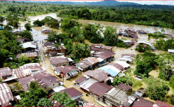

Noticias Destacadas
Colombia en situación de desastre por las fuertes lluvias e inundaciones
Descripción breve de la noticia destacada...
Tarek William Saab: En Venezuela no hay niños detenidos, hay adolescentes
Descripción breve de la noticia destacada...
Edmundo González en Bruselas: El 10 de enero estaremos tomando posesión del nuevo gobierno en Venezuela
El líder opositor venezolano se reunirá con Josep Borrell para agradecer personalmente a la Unión Europea su apoyo para restaurar la democracia en el país.

En imágenes: España en alerta por una nueva DANA que está causando inundaciones en la costa mediterránea del país
Las tormentas que se avecinan también obligaron a suspender las labores de rescate de los equipos que siguen buscando desaparecidos frente a las costas de Valencia, según informó el servicio de salvamento marítimo español.